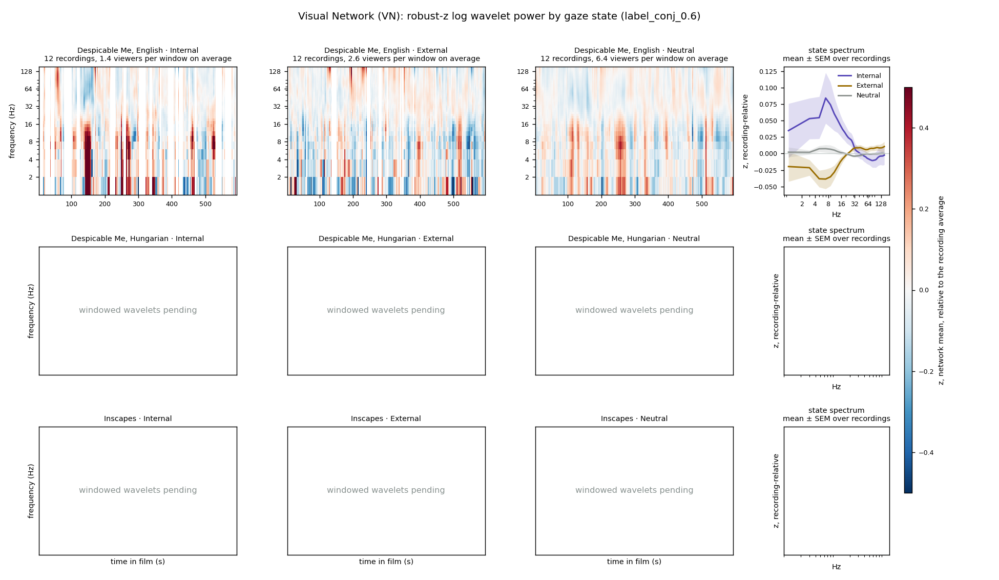
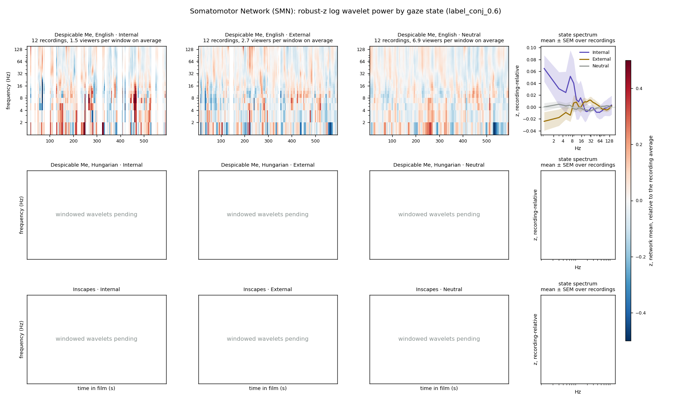
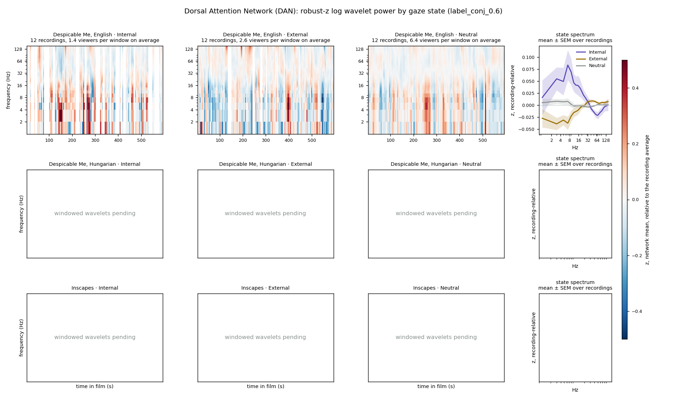
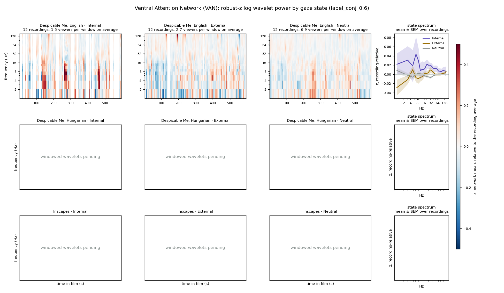
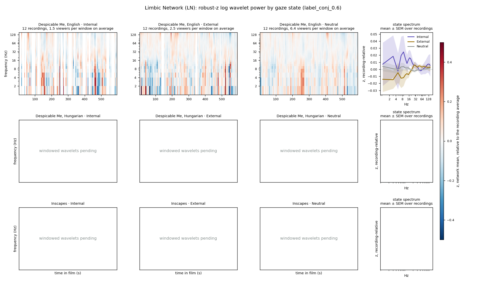
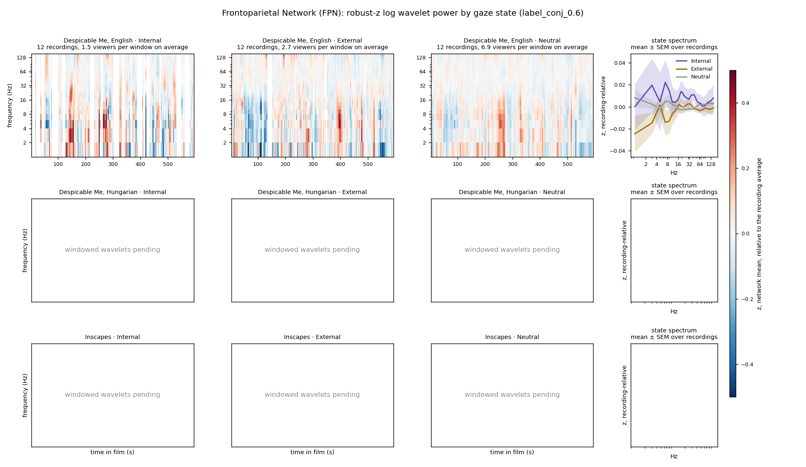
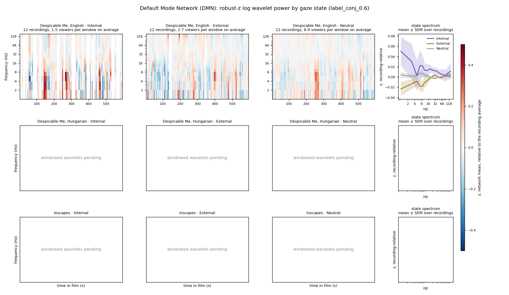

attn_explore_14Sep26 · companion page
Time-frequency maps of wavelet power for each Yeo-7 network, conditioned on the gaze states defined in the Attention State Exploration Log.
The source is the windowed Morlet wavelet power: for each contact, log10 power at 76 frequencies from 1 to 151 Hz in 2 Hz steps, averaged within each 10 s window on the same grid as every other analysis in the track, 236 windows stepped every 2.5 s. Each contact and frequency is robust-z-scored against its own whole-recording median and MAD, so a value of +1 means one typical step above that contact's usual power at that frequency.
For each recording, the contacts belonging to a network are averaged to give one 76 by 236 map, and that recording's mean spectrum over all its good windows is subtracted, so a map shows departure from the recording's own average at each frequency. Windows flagged by the manual QC are removed. The map is then split by state: for the Internal panel only windows labelled Internal keep their values, and so on, and the panels are averaged across recordings. Where no viewer was in that state at a given window the column is blank. The fourth panel in each row collapses time: the mean spectrum of each state's windows per recording, then mean and standard error across recordings.
States are the two-state conj rule at 0.6 from the log: Internal is PC1 z above 0.6 with deviation z above 0.6; External is PC1 z between -1.5 and -0.6; Neutral is everything else except the far-external tail, which is excluded. Recordings are the pipeline's neural inclusion list. The maps are descriptive; no statistics are computed here.
Coverage: windowed wavelets currently exist for 12 English recordings. Hungarian and Inscapes are being windowed from the continuous files and their rows read "pending" until that finishes, after which this page will be regenerated. Four English windowed files were found truncated and were removed to be rebuilt; they will be added at the same time.






